JEE Main 2023 (Session 2), 13 Apr Shift 2: worked solutions for review
Questions and options are NTA’s own images; the green option is NTA’s final key. Every solution below was written by Claude
and checked against NTA’s final key. It is not NTA’s solution. Please mark anything unclear or wrong.
Q1 · Mathematics · MCQ · ID 7155053772
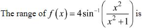
Hint 1: What values can x2/(x2 + 1) take?
Hint 2: It lies in [0, 1): it reaches 0 but never 1.
What this tests: Range of inverse trigonometric functions
1. sin−1 of [0, 1) is [0, π/2).
2. f ranges over [0, 2π).
Answer: (4)
If this felt hard: Revise Inverse Trigonometric Functions.
Claude’s answer: 4 · NTA final key: 4 · agrees · Theory question: not computable, needs a teacher’s review
Q2 · Mathematics · MCQ · ID 7155053773
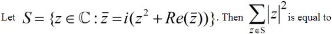
(4) 
Hint 1: Put z = x + iy and compare real and imaginary parts.
Hint 2: x − iy = i(x2 − y2 + x) − 2xy, so x = −2xy and −y = x2 − y2 + x.
What this tests: Complex equations
1. The solutions are z = 0, i, −3/2 − i/2, 1/2 − i/2.
2. Σ|z|2 = 0 + 1 + 5/2 + 1/2 = 4.
Answer: (4)
If this felt hard: Revise Complex Numbers.
Claude’s answer: 4 · NTA final key: 4 · agrees · Answer recomputed with SymPy (tools/verify_pyq_solutions.py)
Q3 · Mathematics · MCQ · ID 7155053774
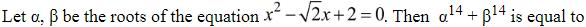
Hint 1: Write the roots in polar form.
Hint 2: The product of the roots is 2, so |α| = √2; the roots are √2 e±iπ/3.
What this tests: Powers of complex roots
1. α, β = √2 e±iπ/3.
2. α14 + β14 = 2 × 27 cos(14π/3) = 256 × (−1/2) = −128.
Answer: (3)
If this felt hard: Revise Complex Numbers (polar form).
Claude’s answer: 3 · NTA final key: 3 · agrees · Answer recomputed with SymPy (tools/verify_pyq_solutions.py)
Q4 · Mathematics · MCQ · ID 7155053775
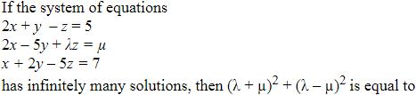
Hint 1: Infinitely many solutions: the second equation is a combination of the other two.
Hint 2: (2, −5, λ, μ) = p(2, 1, −1, 5) + q(1, 2, −5, 7).
What this tests: Consistency of linear systems
1. 2p + q = 2 and p + 2q = −5 give p = 3, q = −4.
2. λ = −3 + 20 = 17, μ = 15 − 28 = −13.
3. (λ + μ)2 + (λ − μ)2 = 16 + 900 = 916.
Answer: (3)
If this felt hard: Revise Determinants.
Claude’s answer: 3 · NTA final key: 3 · agrees · Answer recomputed with SymPy (tools/verify_pyq_solutions.py)
Q5 · Mathematics · MCQ · ID 7155053776
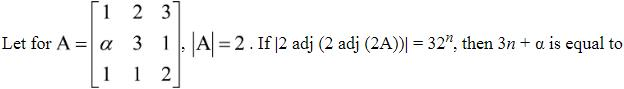
(1) 
(2) 
(3) 
(4) 
Hint 1: Find α from |A| = 2. Then work outward using |kB| = k3|B| and |adj B| = |B|2.
Hint 2: |2A| = 16 = 24.
What this tests: Determinants of adjoints
1. |A| = −α − 2 = 2: α = −4.
2. |adj(2A)| = 28; |2 adj(2A)| = 211; |adj(...)| = 222; |2 adj(...)| = 225 = 325.
3. n = 5: 3n + α = 11.
Answer: (3)
If this felt hard: Revise Determinants.
Claude’s answer: 3 · NTA final key: 3 · agrees · Answer recomputed with SymPy (tools/verify_pyq_solutions.py)
Q6 · Mathematics · MCQ · ID 7155053777
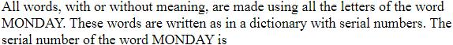
Hint 1: Letters in order: A, D, M, N, O, Y.
Hint 2: Count words before MONDAY block by block.
What this tests: Rank in the dictionary
1. A, D first: 2 × 120 = 240.
2. MA, MD, MN: 3 × 24 = 72 (312).
3. MOA, MOD: 2 × 6 = 12 (324).
4. MONA: 2 (326); MONDAY is the next: 327.
Answer: (3)
If this felt hard: Revise Permutations and Combinations.
Claude’s answer: 3 · NTA final key: 3 · agrees · Answer recomputed by script (tools/verify_pyq_solutions.py)
Q7 · Mathematics · MCQ · ID 7155053778
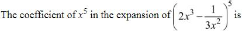
(1) 
(2) 
Hint 1: Power of x in the general term: 3(5 − r) − 2r.
Hint 2: 15 − 5r = 5 gives r = 2.
What this tests: General term
1. C(5,2) × 23 × (1/9) = 80/9.
Answer: (3)
If this felt hard: Revise Binomial Theorem.
Claude’s answer: 3 · NTA final key: 3 · agrees · Answer recomputed with SymPy (tools/verify_pyq_solutions.py)
Q8 · Mathematics · MCQ · ID 7155053779
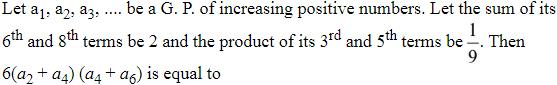
(1) 
(4) 
Hint 1: a3a5 = a42.
Hint 2: ar3 = 1/3, and ar5(1 + r2) = 2.
What this tests: Geometric progressions
1. (1/3)(r2 + r4) = 2: r2 = 2.
2. a4 + a6 = ar3(1 + r2) = 1; a2 + a4 = 1/2.
3. 6 × 1/2 × 1 = 3.
Answer: (4)
If this felt hard: Revise Sequences and Series.
Claude’s answer: 4 · NTA final key: 4 · agrees · Answer recomputed with SymPy (tools/verify_pyq_solutions.py)
Q9 · Mathematics · MCQ · ID 7155053780
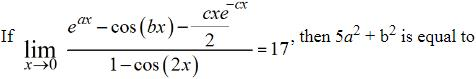
(3) 
Hint 1: Expand the numerator to x2. What must happen to the x term?
Hint 2: eax ≈ 1 + ax + a2x2/2; cxe−cx/2 ≈ (cx − c2x2)/2; 1 − cos 2x ≈ 2x2.
What this tests: Limits by series expansion
1. x term: a − c/2 = 0, so c = 2a.
2. x2 term: a2/2 + b2/2 + c2/2 = (5a2 + b2)/2.
3. Divide by 2x2: (5a2 + b2)/4 = 17 gives 68.
Answer: (1)
If this felt hard: Revise Limits.
Claude’s answer: 1 · NTA final key: 1 · agrees · Answer recomputed with SymPy (tools/verify_pyq_solutions.py)
Q10 · Mathematics · MCQ · ID 7155053781
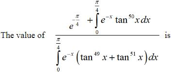
(3)
Hint 1: tan49x + tan51x = tan49x sec2x. Integrate by parts.
Hint 2: ∫e−xtan49x sec2x dx = e−xtan50x/50 + (1/50)∫e−xtan50x dx.
What this tests: Integration by parts
1. Denominator = (1/50)(e−π/4 + ∫e−xtan50x dx).
2. Ratio = 50.
Answer: (3)
If this felt hard: Revise Integrals.
Claude’s answer: 3 · NTA final key: 3 · agrees · Answer recomputed with SymPy (tools/verify_pyq_solutions.py)
Q11 · Mathematics · MCQ · ID 7155053782
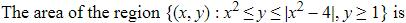
Hint 1: Where is x2 ≤ |x2 − 4|?
Hint 2: Only for x2 ≤ 2; there |x2 − 4| = 4 − x2.
What this tests: Area between curves
1. Area = 2[∫01(3 − x2) dx + ∫1√2(4 − 2x2) dx].
2. = (4/3)(4√2 − 1).
Answer: (1)
If this felt hard: Revise Application of Integrals.
Claude’s answer: 1 · NTA final key: 1 · agrees · Answer recomputed with SymPy (tools/verify_pyq_solutions.py)
Q12 · Mathematics · MCQ · ID 7155053783
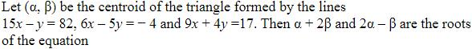
Hint 1: Find the three vertices.
Hint 2: (6, 8), (5, −7), (1, 2).
What this tests: Centroid
1. Centroid (4, 1).
2. α + 2β = 6, 2α − β = 7: x2 − 13x + 42 = 0.
Answer: (4)
If this felt hard: Revise Straight Lines.
Claude’s answer: 4 · NTA final key: 4 · agrees · Answer recomputed with SymPy (tools/verify_pyq_solutions.py)
Q13 · Mathematics · MCQ · ID 7155053784
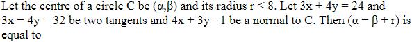
(1) 
(2) 
(3) 
(4) 
Hint 1: The centre lies on a bisector of the two tangents and on the normal.
Hint 2: Bisectors: y = −1 and x = 28/3.
What this tests: Circles and tangents
1. y = −1 with 4x + 3y = 1: centre (1, −1), r = 5 < 8.
2. x = 28/3 gives r > 8.
3. α − β + r = 1 + 1 + 5 = 7.
Answer: (3)
If this felt hard: Revise Circles.
Claude’s answer: 3 · NTA final key: 3 · agrees · Answer recomputed with SymPy (tools/verify_pyq_solutions.py)
Q14 · Mathematics · MCQ · ID 7155053785
(1)
(2)
(3)
(4)
Hint 1: The normal is perpendicular to both AB and the given direction.
Hint 2: (−1, 3, −1) × (4, 2, −6) ∝ (8, 5, 7).
What this tests: Equation of a plane
1. Plane 8x + 5y + 7z = 9.
2. (−2, 5, 0): −16 + 25 = 9.
Answer: (2)
If this felt hard: Revise Three Dimensional Geometry.
Claude’s answer: 2 · NTA final key: 2 · agrees · Answer recomputed with SymPy (tools/verify_pyq_solutions.py)
Q15 · Mathematics · MCQ · ID 7155053786
(1)
(2)
(3)
(4)
Hint 1: Coplanar lines: (a2 − a1)·(d1 × d2) = 0.
Hint 2: First line through (−3, 1, 5) with direction (−3, 1, 5).
What this tests: Coplanar lines
1. Option 2: point (−1, 2, 5), direction (−1, 2, 5).
2. (2, 1, 0)·(−5, 10, −5) = 0.
Answer: (2)
If this felt hard: Revise Three Dimensional Geometry.
Claude’s answer: 2 · NTA final key: 2 · agrees · Answer recomputed with SymPy (tools/verify_pyq_solutions.py)
Q16 · Mathematics · MCQ · ID 7155053787
(1) 
(2) 
(3) 
(4)
Hint 1: Write a general point on the line and make PN perpendicular to it.
Hint 2: Direction (1, 4, 1): N = (4 + t, 5 + 4t, 8 + t).
What this tests: Foot of perpendicular
1. 18t + 36 = 0: t = −2, N = (2, −3, 6).
2. Distance = |4 + 6 + 6 + 5|/3 = 7.
Answer: (2)
If this felt hard: Revise Three Dimensional Geometry.
Claude’s answer: 2 · NTA final key: 2 · agrees · Answer recomputed with SymPy (tools/verify_pyq_solutions.py)
Q17 · Mathematics · MCQ · ID 7155053788
(1)
(2)
(3)
(4)
Hint 1: Expand the cross product; a × a = 0.
Hint 2: (a + 2b) × (2a − 3b) = −7(a × b).
What this tests: Cross product
1. |a × b|2 = 36 × 1/2 = 18.
2. 49 × 18 = 882.
Answer: (2)
If this felt hard: Revise Vector Algebra.
Claude’s answer: 2 · NTA final key: 2 · agrees · Answer recomputed with SymPy (tools/verify_pyq_solutions.py)
Q18 · Mathematics · MCQ · ID 7155053789
(1) 
(2)
(3) 
(4) 
Hint 1: AB + BC + CA = 0, with BC = −CB.
Hint 2: α = 2, β = 4, γ = 3 + δ.
What this tests: Triangle with vectors
1. |AB × CA|2 = (δ − 9)2 + (2δ + 12)2 + 100 = 600 gives δ = 5.
2. CB = (2, 4, 8), CA = (4, 3, 5): dot = 60.
Answer: (1)
If this felt hard: Revise Vector Algebra.
Claude’s answer: 1 · NTA final key: 1 · agrees · Answer recomputed with SymPy (tools/verify_pyq_solutions.py)
Q19 · Mathematics · MCQ · ID 7155053790
(1) 
(2) 
(3) 
(4) 
Hint 1: np − npq = np2 = 1. Then use 2P(X = 2) = 3P(X = 1).
Hint 2: (n − 1)p = 3q.
What this tests: Binomial distribution
1. p = 3/(n + 2) and np2 = 1 give n = 4, p = 1/2.
2. P(X > 1) = 1 − 5/16 = 11/16.
3. n2 × 11/16 = 11.
Answer: (4)
If this felt hard: Revise Probability.
Claude’s answer: 4 · NTA final key: 4 · agrees · Answer recomputed with SymPy (tools/verify_pyq_solutions.py)
Q20 · Mathematics · MCQ · ID 7155053791
(1)
(2)
(3)
(4)
Hint 1: Which case is missing from the three?
Hint 2: p ∧ q is the only case left out.
What this tests: Logical equivalence
1. The statement is ∼(p ∧ q) = (∼p) ∨ (∼q).
Answer: (1)
If this felt hard: Revise Mathematical Reasoning.
Claude’s answer: 1 · NTA final key: 1 · agrees · Answer recomputed by script (tools/verify_pyq_solutions.py)
Note: Mathematical reasoning is no longer in the JEE Main syllabus.
Q21 · Mathematics · Numerical · ID 7155053792
Hint 1: List R first.
Hint 2: R = {(−4, 4), (−3, 3), (0, 0), (1, 1), (3, 3), (4, 4), (0, 1), (3, −2)}.
What this tests: Reflexive and symmetric closure
1. Reflexive: add (−4, −4), (−3, −3), (−2, −2): 3.
2. Symmetric: add (4, −4), (3, −3), (1, 0), (−2, 3): 4.
3. Total 7.
Answer: 7
If this felt hard: Revise Relations and Functions.
Claude’s answer: 7 · NTA final key: 7 · agrees · Answer recomputed by script (tools/verify_pyq_solutions.py)
Q22 · Mathematics · Numerical · ID 7155053793
Hint 1: Divisible by 6: even last digit and digit sum divisible by 3.
Hint 2: Last digit 2 or 4.
What this tests: Divisibility counting
1. Last 2: first two digits sum ≡ 1 (mod 3): 8 pairs.
2. Last 4: sum ≡ 2 (mod 3): 8 pairs.
3. 16.
Answer: 16
If this felt hard: Revise Permutations and Combinations.
Claude’s answer: 16 · NTA final key: 16 · agrees · Answer recomputed by script (tools/verify_pyq_solutions.py)
Q23 · Mathematics · Numerical · ID 7155053794
Hint 1: Find a small power of 7 that is ±1 mod 17.
Hint 2: 72 = 49 ≡ −2; 78 ≡ 16 ≡ −1.
What this tests: Remainders
1. 716 ≡ 1, so 7103 = 796 × 77 ≡ 77.
2. 77 = 78/7 ≡ −1 × 7−1 ≡ −5 ≡ 12 (since 7 × 5 = 35 ≡ 1).
Answer: 12
If this felt hard: Revise Binomial Theorem.
Claude’s answer: 12 · NTA final key: 12 · agrees · Answer recomputed by script (tools/verify_pyq_solutions.py)
Q24 · Mathematics · Numerical · ID 7155053795
Hint 1: Topic: Greatest integer sums. Which rule or fact from it settles this question?
Hint 2: [√k] = n for n2 ≤ k < (n + 1)2: 2n + 1 values.
What this tests: Greatest integer sums
1. Σn=19 n(2n + 1) = 615.
2. n = 10 for k = 100..120: 210.
3. 825.
Answer: 825
If this felt hard: Revise Sequences and Series.
Claude’s answer: 825 · NTA final key: 825 · agrees · Answer recomputed by script (tools/verify_pyq_solutions.py)
Q25 · Mathematics · Numerical · ID 7155053796
Hint 1: Write 2f(2) + f'(2) as one sum.
Hint 2: Σ 2k−1(k2 + 4k).
What this tests: Sums with derivatives
1. The sum is 121857 = 119 × 210 + 1.
2. n = 10.
Answer: 10
If this felt hard: Revise Sequences and Series.
Claude’s answer: 10 · NTA final key: 10 · agrees · Answer recomputed with SymPy (tools/verify_pyq_solutions.py)
Q26 · Mathematics · Numerical · ID 7155053797
Hint 1: Put t = sin x. Can you see the integrand as the derivative of something simple?
Hint 2: With An = Σtk−1 and Bn = Σ(2k − 1)tk−1, check that d/dt(tAn2) = AnBn.
What this tests: Definite integrals of polynomials
1. fn = ∫01AnBn dt = [tAn2]01 = n2.
2. f21 − f20 = 441 − 400 = 41.
Answer: 41
If this felt hard: Revise Definite Integrals.
Claude’s answer: 41 · NTA final key: 41 · agrees · Answer recomputed with SymPy (tools/verify_pyq_solutions.py)
Q27 · Mathematics · Numerical · ID 7155053798
Hint 1: Integrating factor (x2 − 1)2.
Hint 2: y(x2 − 1)2 = √(x2 − 1) + 2 ln(x + √(x2 − 1)) + C.
What this tests: Linear differential equations
1. y(2) gives 9y(2) = √3 + 2 ln(2 + √3) + C = 2 ln(2 + √3): C = −√3.
2. y(√2) = 1 + 2 ln(√2 + 1) − √3.
3. α = 2, β = 1, γ = 3: αβγ = 6.
Answer: 6
If this felt hard: Revise Differential Equations.
Claude’s answer: 6 · NTA final key: 6 · agrees · Answer recomputed with SymPy (tools/verify_pyq_solutions.py)
Q28 · Mathematics · Numerical · ID 7155053799
Hint 1: Find a and b of the hyperbola, then the tangent with slope 3/2.
Hint 2: ae = 2, e = 3/2: a2 = 16/9, b2 = 20/9. c2 = a2m2 − b2.
What this tests: Tangents to a hyperbola
1. c2 = 16/9; the first-quadrant point needs c = −4/3.
2. Intercepts a = 8/9, b = −4/3.
3. 16/3 + 20/3 = 12.
Answer: 12
If this felt hard: Revise Conic Sections.
Claude’s answer: 12 · NTA final key: 12 · agrees · Answer recomputed with SymPy (tools/verify_pyq_solutions.py)
Q29 · Mathematics · Numerical · ID 7155053800
Hint 1: Recover Σx and Σx2, correct them.
Hint 2: Σx = 500, Σx2 = 10(144 + 2500) = 26440.
What this tests: Corrected variance
1. Corrected Σx = 450, Σx2 = 26440 − 2025 − 2500 + 400 + 625 = 22940.
2. Variance = 2294 − 452 = 269.
Answer: 269
If this felt hard: Revise Statistics.
Claude’s answer: 269 · NTA final key: 269 · agrees · Answer recomputed by script (tools/verify_pyq_solutions.py)
Q30 · Mathematics · Numerical · ID 7155053801
Hint 1: For |x| ≤ 1, 2tan−1x = sin−1(2x/(1 + x2)).
Hint 2: So x = 2x/(1 + x2).
What this tests: Inverse trigonometric equations
1. x = 0 or x2 = 1.
2. x = 0, 1 in (−1, 1]: 2 solutions.
Answer: 2
If this felt hard: Revise Inverse Trigonometric Functions.
Claude’s answer: 2 · NTA final key: 2 · agrees · Answer recomputed with SymPy (tools/verify_pyq_solutions.py)
Q31 · Physics · MCQ · ID 7155053802
(1)
(2)
(3)
(4)
Hint 1: a/Y2 has the dimensions of pressure; b of volume.
Hint 2: a/b = pressure × volume.
What this tests: Dimensions
1. P × V = energy.
Answer: (1)
If this felt hard: Revise Units and Measurements.
Claude’s answer: 1 · NTA final key: 1 · agrees · Answer recomputed by script (tools/verify_pyq_solutions.py)
Q32 · Physics · MCQ · ID 7155053803
(1)
(2)
(3)
(4)
Hint 1: Topic: Speed. Which rule or fact from it settles this question?
Hint 2: v = ds/dt.
What this tests: Speed
1. v = 5t = 25 m/s.
Answer: (3)
If this felt hard: Revise Motion in a Straight Line.
Claude’s answer: 3 · NTA final key: 3 · agrees · Answer recomputed by script (tools/verify_pyq_solutions.py)
Q33 · Physics · MCQ · ID 7155053804
(1)
(2)
(3)
(4)
Hint 1: Topic: Relative velocity. Which rule or fact from it settles this question?
Hint 2: Opposite directions: relative speeds add.
What this tests: Relative velocity
1. 144 km/h = 40 m/s; 40 × 8 = 320 m.
Answer: (4)
If this felt hard: Revise Motion in a Straight Line.
Claude’s answer: 4 · NTA final key: 4 · agrees · Answer recomputed by script (tools/verify_pyq_solutions.py)
Q34 · Physics · MCQ · ID 7155053805
(1)
(2)
(3)
(4)
Hint 1: Topic: Centripetal force. Which rule or fact from it settles this question?
Hint 2: F = mω2r.
What this tests: Centripetal force
1. 200 × 0.04 × 70 = 560 N.
Answer: (3)
If this felt hard: Revise Laws of Motion.
Claude’s answer: 3 · NTA final key: 3 · agrees · Answer recomputed by script (tools/verify_pyq_solutions.py)
Q35 · Physics · MCQ · ID 7155053806
(1) 
(2) 
(3)
(4)
Hint 1: Topic: Escape velocity. Which rule or fact from it settles this question?
Hint 2: ve = √(2GM/R).
What this tests: Escape velocity
1. I true; II false.
Answer: (3)
If this felt hard: Revise Gravitation.
Claude’s answer: 3 · NTA final key: 3 · agrees · Theory question: not computable, needs a teacher’s review
Q36 · Physics · MCQ · ID 7155053807
(1)
(2) 
(3) 
(4) 
Hint 1: Terminal velocity v ∝ r2.
Hint 2: Δv/v = 2Δr/r.
What this tests: Terminal velocity errors
1. 2 × 0.1/5 = 4%: A true.
2. R false: v ∝ r2.
Answer: (3)
If this felt hard: Revise Mechanical Properties of Fluids.
Claude’s answer: 3 · NTA final key: 3 · agrees · Answer recomputed by script (tools/verify_pyq_solutions.py)
Q37 · Physics · MCQ · ID 7155053808
(1) 
(2) 
(3)
(4)
Hint 1: Topic: Gravity on planets. Which rule or fact from it settles this question?
Hint 2: g ∝ ρR.
What this tests: Gravity on planets
1. gB/gA = (1/2)(1.5) = 3/4.
Answer: (3)
If this felt hard: Revise Gravitation.
Claude’s answer: 3 · NTA final key: 3 · agrees · Answer recomputed by script (tools/verify_pyq_solutions.py)
Q38 · Physics · MCQ · ID 7155053809
(1)
(2)
(3)
(4)
Hint 1: Sudden compression is adiabatic.
Hint 2: PVγ = constant.
What this tests: Adiabatic process
1. P = P04γ.
Answer: (3)
If this felt hard: Revise Thermodynamics.
Claude’s answer: 3 · NTA final key: 3 · agrees · Answer recomputed by script (tools/verify_pyq_solutions.py)
Q39 · Physics · MCQ · ID 7155053810
(1)
(2)
(3)
(4)
Hint 1: Mean free path λ = kT/(√2πd2P).
Hint 2: At constant P, λ ∝ T.
What this tests: Mean free path
1. 1500d × 373/273 ≈ 2049d.
Answer: (3)
If this felt hard: Revise Kinetic Theory.
Claude’s answer: 3 · NTA final key: 3 · agrees · Answer recomputed by script (tools/verify_pyq_solutions.py)
Q40 · Physics · MCQ · ID 7155053811
(1)
(2)
(3)
(4)
Hint 1: Topic: Energy in SHM. Which rule or fact from it settles this question?
Hint 2: KE = PE means each is half of kA2/2.
What this tests: Energy in SHM
1. x2 = A2/2: x = A/√2.
Answer: (3)
If this felt hard: Revise Oscillations.
Claude’s answer: 3 · NTA final key: 3 · agrees · Answer recomputed by script (tools/verify_pyq_solutions.py)
Q41 · Physics · MCQ · ID 7155053812
(1)
(2)
(3)
(4)
Hint 1: Topic: Maximum repulsion. Which rule or fact from it settles this question?
Hint 2: F ∝ q(10 − q).
What this tests: Maximum repulsion
1. Maximum at q = 5 μC.
Answer: (3)
If this felt hard: Revise Electric Charges and Fields.
Claude’s answer: 3 · NTA final key: 3 · agrees · Answer recomputed with SymPy (tools/verify_pyq_solutions.py)
Q42 · Physics · MCQ · ID 7155053813
(1)
(2)
(3)
(4)
Hint 1: In steady state no current flows through the capacitor branch.
Hint 2: Current = 3/(4 + 6).
What this tests: Capacitors in DC circuits
1. I = 0.3 A; the bottom 6 Ω has 1.8 V.
2. The capacitor branch (no current) also has 1.8 V: Q = 4 × 1.8 = 7.2 μC.
Answer: (3)
If this felt hard: Revise Electrostatic Potential and Capacitance.
Claude’s answer: 3 · NTA final key: 3 · agrees · Answer recomputed by script (tools/verify_pyq_solutions.py)
Note: Figure reading: capacitor and 6 Ω in the middle branch, 6 Ω at the bottom.
Q43 · Physics · MCQ · ID 7155053814
(1) 
(2)
(3) 
(4)
Hint 1: F = qv × B with q = −e.
Hint 2: î × (−k̂) = ĵ.
What this tests: Magnetic force
1. Force = −e(ĵ) along −y (B).
2. v ⊥ B: circular path (E).
Answer: (4)
If this felt hard: Revise Moving Charges and Magnetism.
Claude’s answer: 4 · NTA final key: 4 · agrees · Answer recomputed by script (tools/verify_pyq_solutions.py)
Q44 · Physics · MCQ · ID 7155053815
(1)
(2) 
(3)
(4)
Hint 1: Topic: AC circuits. Which rule or fact from it settles this question?
Hint 2: Resonance needs both L and C. What is the power factor of a pure L or C?
What this tests: AC circuits
1. Both statements false.
Answer: (2)
If this felt hard: Revise Alternating Current.
Claude’s answer: 2 · NTA final key: 2 · agrees · Theory question: not computable, needs a teacher’s review
Q45 · Physics · MCQ · ID 7155053816
(1)
(2)
(3)
(4)
Hint 1: Propagation is along E × B.
Hint 2: (−k̂) × î = −ĵ.
What this tests: EM wave direction
1. Negative y-axis.
Answer: (2)
If this felt hard: Revise Electromagnetic Waves.
Claude’s answer: 2 · NTA final key: 2 · agrees · Answer recomputed by script (tools/verify_pyq_solutions.py)
Q46 · Physics · MCQ · ID 7155053817
(1) 
(2)
(3)
(4)
Hint 1: Topic: Interference. Which rule or fact from it settles this question?
Hint 2: Imax/Imin = ((a1 + a2)/(a1 − a2))2.
What this tests: Interference
1. (3/1)2 = 9.
Answer: (3)
If this felt hard: Revise Wave Optics.
Claude’s answer: 3 · NTA final key: 3 · agrees · Answer recomputed by script (tools/verify_pyq_solutions.py)
Q47 · Physics · MCQ · ID 7155053818
(1) 
(2) 
(3) 
(4) 
Hint 1: Topic: Photoelectric effect. Which rule or fact from it settles this question?
Hint 2: Which radiation has the highest photon energy? How does KEmax depend on ν?
What this tests: Photoelectric effect
1. I true (UV).
2. II false: KEmax = hν − φ rises linearly.
Answer: (3)
If this felt hard: Revise Dual Nature of Radiation and Matter.
Claude’s answer: 3 · NTA final key: 3 · agrees · Theory question: not computable, needs a teacher’s review
Q48 · Physics · MCQ · ID 7155053819
(1) 
(2)
(3)
(4)
Hint 1: Why is BE/A nearly constant from A = 30 to 170?
Hint 2: Saturation: a nucleon interacts only with near neighbours.
What this tests: Binding energy
1. Both true; R explains A.
Answer: (1)
If this felt hard: Revise Nuclei.
Claude’s answer: 1 · NTA final key: 1 · agrees · Theory question: not computable, needs a teacher’s review
Q49 · Physics · MCQ · ID 7155053820
(1)
(2)
(3)
(4)
Hint 1: Topic: Logic gates. Which rule or fact from it settles this question?
Hint 2: NAND is 0 only when both inputs are 1.
What this tests: Logic gates
1. Mark the intervals where A = B = 1; the output is 0 only there: waveform 2.
Answer: (2)
If this felt hard: Revise Semiconductor Electronics.
Claude’s answer: 2 · NTA final key: 2 · agrees · Theory question: not computable, needs a teacher’s review
Note: Figure reading of the timing diagram.
Q50 · Physics · MCQ · ID 7155053821
(1)
(2)
(3)
(4)
Hint 1: Topic: Antenna size. Which rule or fact from it settles this question?
Hint 2: Recall the antenna size rule.
What this tests: Antenna size
1. At least λ/4.
Answer: (4)
If this felt hard: Revise Communication Systems.
Claude’s answer: 4 · NTA final key: 4 · agrees · Theory question: not computable, needs a teacher’s review
Note: Communication systems is no longer in the JEE Main syllabus.
Q51 · Physics · Numerical · ID 7155053822
Hint 1: Topic: Work–energy theorem. Which rule or fact from it settles this question?
Hint 2: Work = change in KE.
What this tests: Work–energy theorem
1. (1/2)m(4u2 − u2) = 3E.
Answer: 3
If this felt hard: Revise Work, Energy and Power.
Claude’s answer: 3 · NTA final key: 3 · agrees · Answer recomputed by script (tools/verify_pyq_solutions.py)
Q52 · Physics · Numerical · ID 7155053823
Hint 1: Hollow cylinder: I = MR2.
Hint 2: α = FR/I.
What this tests: Rotational dynamics
1. α = 52.5/(5 × 0.7) = 15 rad/s2.
Answer: 15
If this felt hard: Revise System of Particles and Rotational Motion.
Claude’s answer: 15 · NTA final key: 15 · agrees · Answer recomputed by script (tools/verify_pyq_solutions.py)
Q53 · Physics · Numerical · ID 7155053824
Hint 1: Same heat current through both plates.
Hint 2: k1(100 − T) = k2T.
What this tests: Heat conduction
1. 84(100 − T) = 126T: T = 40 °C.
Answer: 40
If this felt hard: Revise Thermal Properties of Matter.
Claude’s answer: 40 · NTA final key: 40 · agrees · Answer recomputed by script (tools/verify_pyq_solutions.py)
Q54 · Physics · Numerical · ID 7155053825
Hint 1: Topic: Sonometer. Which rule or fact from it settles this question?
Hint 2: f ∝ √T.
What this tests: Sonometer
1. m = 180 × (50/30)2 = 500 g.
Answer: 500
If this felt hard: Revise Waves.
Claude’s answer: 500 · NTA final key: 500 · agrees · Answer recomputed by script (tools/verify_pyq_solutions.py)
Q55 · Physics · Numerical · ID 7155053826
Hint 1: Both forces on −2q point the same way? Check signs.
Hint 2: q attracts −2q towards −x; 2q attracts it towards +x.
What this tests: Coulomb's law
1. F2q = 64kq2/R2, Fq = 32kq2/(9R2).
2. kq2/R2 = 90 N; net = 90 × (64 − 32/9) = 5440 N.
Answer: 5440
If this felt hard: Revise Electric Charges and Fields.
Claude’s answer: 5440 · NTA final key: 5440 · agrees · Answer recomputed by script (tools/verify_pyq_solutions.py)
Q56 · Physics · Numerical · ID 7155053827
Hint 1: The battery joins the top and bottom vertices; the capacitor joins the left and right ones.
Hint 2: Left path 3 + 9 = 12 Ω; right path 4 + 2 = 6 Ω.
What this tests: Capacitor in a bridge
1. Left vertex: 12 − 3 × 1 = 9 V. Right vertex: 12 − 4 × 2 = 4 V.
2. U = (1/2) × 6 × 52 = 75 μJ.
Answer: 75
If this felt hard: Revise Electrostatic Potential and Capacitance.
Claude’s answer: 75 · NTA final key: 75 · agrees · Answer recomputed by script (tools/verify_pyq_solutions.py)
Note: Figure reading: battery across the top and bottom vertices.
Q57 · Physics · Numerical · ID 7155053828
Hint 1: Magnetic force balances weight.
Hint 2: BIL = mg.
What this tests: Force on a current
1. I = 0.4/(0.4 × 0.5) = 2 A.
Answer: 2
If this felt hard: Revise Moving Charges and Magnetism.
Claude’s answer: 2 · NTA final key: 2 · agrees · Answer recomputed by script (tools/verify_pyq_solutions.py)
Q58 · Physics · Numerical · ID 7155053829
Hint 1: Q = ΔΦ/R.
Hint 2: ΔΦ = N × 2BA.
What this tests: Induced charge
1. ΔΦ = 100 × 3 × 24 × 10−4 = 0.72 Wb.
2. Q = 0.06 C = 60 mC.
Answer: 60
If this felt hard: Revise Electromagnetic Induction.
Claude’s answer: 60 · NTA final key: 60 · agrees · Answer recomputed by script (tools/verify_pyq_solutions.py)
Q59 · Physics · Numerical · ID 7155053830
Hint 1: Each half is plano-convex.
Hint 2: f doubles.
What this tests: Cutting lenses
1. f = 20 cm: P = 5 D.
Answer: 5
If this felt hard: Revise Ray Optics.
Claude’s answer: 5 · NTA final key: 5 · agrees · Answer recomputed by script (tools/verify_pyq_solutions.py)
Q60 · Physics · Numerical · ID 7155053831
Hint 1: Net energy = Eabsorbed − Eemitted.
Hint 2: hc = 1.98 × 10−25 J m.
What this tests: Photon energy
1. hc/e = 1237.5 eV nm; 1237.5(1/500 − 1/600) = 0.4125 eV.
2. n = 4125.
Answer: 4125
If this felt hard: Revise Dual Nature of Radiation and Matter.
Claude’s answer: 4125 · NTA final key: 4125 · agrees · Answer recomputed by script (tools/verify_pyq_solutions.py)
Q61 · Chemistry · MCQ · ID 7155053832
(1) 
(2)
(3)
(4) 
Hint 1: Compare bond angles of SO2 and H2O.
Hint 2: SO2 ≈ 119°, H2O ≈ 104.5°.
What this tests: Shapes of molecules
1. I true; II false.
Answer: (3)
If this felt hard: Revise Chemical Bonding.
Claude’s answer: 3 · NTA final key: 3 · agrees · Theory question: not computable, needs a teacher’s review
Q62 · Chemistry · MCQ · ID 7155053833
(1)
(2)
(3)
(4)
Hint 1: Topic: Thermodynamic systems. Which rule or fact from it settles this question?
Hint 2: Adiabatic: no heat exchange. Diathermic: heat flows out.
What this tests: Thermodynamic systems
1. A: temperature rises. B: temperature stays the same.
Answer: (1)
If this felt hard: Revise Thermodynamics.
Claude’s answer: 1 · NTA final key: 1 · agrees · Theory question: not computable, needs a teacher’s review
Q63 · Chemistry · MCQ · ID 7155053834
(1) 
(2)
(3) 
(4) 
Hint 1: Topic: Tyndall effect. Which rule or fact from it settles this question?
Hint 2: Recall NCERT's Tyndall effect conditions.
What this tests: Tyndall effect
1. Both statements are correct; R explains A.
Answer: (1)
If this felt hard: Revise Surface Chemistry.
Claude’s answer: 1 · NTA final key: 1 · agrees · Theory question: not computable, needs a teacher’s review
Note: Surface chemistry is no longer in the JEE Main syllabus.
Q64 · Chemistry · MCQ · ID 7155053835
(1)
(2)
(3)
(4)
Hint 1: Topic: Covalency. Which rule or fact from it settles this question?
Hint 2: Count bonds and the oxidation state.
What this tests: Covalency
1. Covalency 4, oxidation state +3.
Answer: (2)
If this felt hard: Revise Chemical Bonding.
Claude’s answer: 2 · NTA final key: 2 · agrees · Theory question: not computable, needs a teacher’s review
Q65 · Chemistry · MCQ · ID 7155053836
(1) 
(2) 
(3) 
(4)
Hint 1: Topic: Ellingham diagram. Which rule or fact from it settles this question?
Hint 2: What is plotted on an Ellingham diagram?
What this tests: Ellingham diagram
1. I true; II false (ΔG° vs T).
Answer: (3)
If this felt hard: Revise General Principles of Isolation of Elements.
Claude’s answer: 3 · NTA final key: 3 · agrees · Theory question: not computable, needs a teacher’s review
Note: Metallurgy is no longer in the JEE Main syllabus.
Q66 · Chemistry · MCQ · ID 7155053837
(1)
(2) 
(3)
(4)
Hint 1: Topic: Isotopes of hydrogen. Which rule or fact from it settles this question?
Hint 2: Why do isotopes react at different rates?
What this tests: Isotopes of hydrogen
1. Different bond dissociation enthalpies: both correct, R explains A.
Answer: (1)
If this felt hard: Revise Hydrogen.
Claude’s answer: 1 · NTA final key: 1 · agrees · Theory question: not computable, needs a teacher’s review
Q67 · Chemistry · MCQ · ID 7155053838
(1)
(2)
(3)
(4)
Hint 1: Topic: Beryllium compounds. Which rule or fact from it settles this question?
Hint 2: How does NCERT prepare BeF2?
What this tests: Beryllium compounds
1. Heating (NH4)2BeF4.
Answer: (2)
If this felt hard: Revise The s-Block Elements.
Claude’s answer: 2 · NTA final key: 2 · agrees · Theory question: not computable, needs a teacher’s review
Q68 · Chemistry · MCQ · ID 7155053839
(1)
(2)
(3)
(4)
Hint 1: Topic: Enthalpy of formation. Which rule or fact from it settles this question?
Hint 2: Which sodium halide is most stable?
What this tests: Enthalpy of formation
1. NaI < NaBr < NaCl < NaF (by magnitude).
Answer: (2)
If this felt hard: Revise The s-Block Elements.
Claude’s answer: 2 · NTA final key: 2 · agrees · Theory question: not computable, needs a teacher’s review
Note: Teacher look: NTA orders the magnitudes; as signed values the order is reversed.
Q69 · Chemistry · MCQ · ID 7155053840
(1)
(2)
(3)
(4)
Hint 1: Topic: Halide ions. Which rule or fact from it settles this question?
Hint 2: Which halide is the strongest reducing agent?
What this tests: Halide ions
1. Only I− (4I− + 4H+ + O2 → 2I2 + 2H2O).
Answer: (3)
If this felt hard: Revise The p-Block Elements.
Claude’s answer: 3 · NTA final key: 3 · agrees · Theory question: not computable, needs a teacher’s review
Q70 · Chemistry · MCQ · ID 7155053841
(1)
(2)
(3)
(4)
Hint 1: Topic: Magnetic properties. Which rule or fact from it settles this question?
Hint 2: Count unpaired electrons.
What this tests: Magnetic properties
1. Co3+ low spin 0; Co2+ high spin 3; Zn2+ 0; Ni2+ 2.
2. [Co(H2O)6]2+.
Answer: (2)
If this felt hard: Revise Coordination Compounds.
Claude’s answer: 2 · NTA final key: 2 · agrees · Theory question: not computable, needs a teacher’s review
Q71 · Chemistry · MCQ · ID 7155053842
(1)
(2)
(3) 
(4) 
Hint 1: Topic: Greenhouse gases. Which rule or fact from it settles this question?
Hint 2: Which gases absorb infrared?
What this tests: Greenhouse gases
1. Water vapour and ozone.
Answer: (1)
If this felt hard: Revise Environmental Chemistry.
Claude’s answer: 1 · NTA final key: 1 · agrees · Theory question: not computable, needs a teacher’s review
Note: Environmental chemistry is no longer in the JEE Main syllabus.
Q72 · Chemistry · MCQ · ID 7155053843
(1) 
(2) 
(3) 
(4) 
Hint 1: Topic: Stereoisomers. Which rule or fact from it settles this question?
Hint 2: M(AA)2ab: cis and trans.
What this tests: Stereoisomers
1. trans: 1; cis: a pair of enantiomers.
2. 3.
Answer: (2)
If this felt hard: Revise Coordination Compounds.
Claude’s answer: 2 · NTA final key: 2 · agrees · Theory question: not computable, needs a teacher’s review
Q73 · Chemistry · MCQ · ID 7155053844
(1)
(2)
(3)
(4)
Hint 1: Topic: Salt analysis. Which rule or fact from it settles this question?
Hint 2: Group V cations are precipitated as carbonates.
What this tests: Salt analysis
1. BaCO3.
Answer: (3)
If this felt hard: Revise practical chemistry.
Claude’s answer: 3 · NTA final key: 3 · agrees · Theory question: not computable, needs a teacher’s review
Note: Teacher look: NTA's key is the group-V precipitate; the confirmatory test is yellow BaCrO_{4}.
Q74 · Chemistry · MCQ · ID 7155053845
(1)
(2) 
(3) 
(4)
Hint 1: Which π electrons sit in the aromatic ring?
Hint 2: Tropolone's ring has 6π; the C=O π pair stays on O.
What this tests: Aromaticity
1. I true (8 π electrons in the molecule, aromatic).
2. II false.
Answer: (3)
If this felt hard: Revise Hydrocarbons.
Claude’s answer: 3 · NTA final key: 3 · agrees · Theory question: not computable, needs a teacher’s review
Q75 · Chemistry · MCQ · ID 7155053846
(1) 
(2) 
(3)
(4) 
Hint 1: Topic: Reactions of haloalkanes. Which rule or fact from it settles this question?
Hint 2: Recall each reagent's product with alkyl halides.
What this tests: Reactions of haloalkanes
1. KOH(alc): alkene. KCN: nitrile. AgNO2: nitroalkane. CH3COOAg: ester.
Answer: (2)
If this felt hard: Revise Haloalkanes.
Claude’s answer: 2 · NTA final key: 2 · agrees · Theory question: not computable, needs a teacher’s review
Q76 · Chemistry · MCQ · ID 7155053847
(1) 
(2) 
(3) 
(4) 
Hint 1: Topic: Acidity of alcohols. Which rule or fact from it settles this question?
Hint 2: The −I effect falls with distance.
What this tests: Acidity of alcohols
1. A > B > C is true (β-Cl closest).
2. R true but not the reason.
Answer: (2)
If this felt hard: Revise Alcohols, Phenols and Ethers.
Claude’s answer: 2 · NTA final key: 2 · agrees · Theory question: not computable, needs a teacher’s review
Q77 · Chemistry · MCQ · ID 7155053848
(1)
(2)
(3)
(4)
Hint 1: Which nucleophile adds to the acrylonitrile C=C?
Hint 2: Thiol is the better nucleophile (Michael addition).
What this tests: Michael addition
1. HO–CH2CH2–S–CH2CH2–CN.
Answer: (2)
If this felt hard: Revise Aldehydes and Ketones (conjugate addition).
Claude’s answer: 2 · NTA final key: 2 · agrees · Theory question: not computable, needs a teacher’s review
Note: Beyond NCERT.
Q78 · Chemistry · MCQ · ID 7155053849
(1)
(2)
(3)
(4)
Hint 1: Topic: Diazonium salts. Which rule or fact from it settles this question?
Hint 2: Work backwards from 1,3,5-tribromobenzene.
What this tests: Diazonium salts
1. C = diazonium, B = 2,4,6-tribromoaniline, A = aniline.
Answer: (4)
If this felt hard: Revise Amines.
Claude’s answer: 4 · NTA final key: 4 · agrees · Theory question: not computable, needs a teacher’s review
Q79 · Chemistry · MCQ · ID 7155053850
(1)
(2)
(3)
(4)
Hint 1: Topic: Amino acids. Which rule or fact from it settles this question?
Hint 2: Count basic groups in each amino acid.
What this tests: Amino acids
1. Asparagine: one NH2 (amide N is not basic).
Answer: (1)
If this felt hard: Revise Biomolecules.
Claude’s answer: 1 · NTA final key: 1 · agrees · Theory question: not computable, needs a teacher’s review
Q80 · Chemistry · MCQ · ID 7155053851
(1) 
(2) 
(3) 
(4) 
Hint 1: Topic: Polymers. Which rule or fact from it settles this question?
Hint 2: Match each polymer type.
What this tests: Polymers
1. Weak forces: neoprene. H-bonding: nylon 6,6. Heavily branched: phenol–formaldehyde. HDPE: AlEt3 + TiCl4.
Answer: (3)
If this felt hard: Revise Polymers.
Claude’s answer: 3 · NTA final key: 3 · agrees · Theory question: not computable, needs a teacher’s review
Note: Polymers are no longer in the JEE Main syllabus.
Q81 · Chemistry · Numerical · ID 7155053852
Hint 1: Topic: Mole concept. Which rule or fact from it settles this question?
Hint 2: 1 mol M2CO3 gives 1 mol CO2.
What this tests: Mole concept
1. 0.01 mol in 1 g: M = 100 g/mol.
Answer: 100
If this felt hard: Revise Some Basic Concepts of Chemistry.
Claude’s answer: 100 · NTA final key: 100 · agrees · Answer recomputed by script (tools/verify_pyq_solutions.py)
Q82 · Chemistry · Numerical · ID 7155053853
Hint 1: Topic: bcc radius. Which rule or fact from it settles this question?
Hint 2: bcc: 4r = √3a.
What this tests: bcc radius
1. r = 1.732 Å ≈ 17 × 10−1 Å.
Answer: 17
If this felt hard: Revise The Solid State.
Claude’s answer: 17 · NTA final key: 17 · agrees · Answer recomputed by script (tools/verify_pyq_solutions.py)
Note: Solid state is no longer in the JEE Main syllabus.
Q83 · Chemistry · Numerical · ID 7155053854
Hint 1: L = √(l(l + 1)) h/2π.
Hint 2: s orbital: l = 0.
What this tests: Orbital angular momentum
1. L = 0.
Answer: 0
If this felt hard: Revise Structure of Atom.
Claude’s answer: 0 · NTA final key: 0 · agrees · Theory question: not computable, needs a teacher’s review
Q84 · Chemistry · Numerical · ID 7155053855
Hint 1: Take 100 g of solution.
Hint 2: Particles: NaCl 0.5 × 2, MgCl2 0.2 × 3.
What this tests: Elevation of boiling point
1. 1.6 mol particles in 51.75 g water: m = 30.9.
2. ΔT = 0.52 × 30.9 = 16.1: b.p. ≈ 116 °C.
Answer: 116
If this felt hard: Revise Solutions.
Claude’s answer: 116 · NTA final key: 116 · agrees · Answer recomputed by script (tools/verify_pyq_solutions.py)
Q85 · Chemistry · Numerical · ID 7155053856
Hint 1: Buffer: 3 mmol acid, 2 mmol acetate.
Hint 2: pH = pKa + log(salt/acid).
What this tests: Buffers
1. pH = 4.76 + log(2/3) = 4.76 + 0.30 − 0.48 = 4.58.
Answer: 458
If this felt hard: Revise Equilibrium.
Claude’s answer: 458 · NTA final key: 458 · agrees · Answer recomputed by script (tools/verify_pyq_solutions.py)
Q86 · Chemistry · Numerical · ID 7155053857
Hint 1: At pH 14 [OH−] = 1, so [Cu2+] = Ksp.
Hint 2: E = E° + (0.059/2) log[Cu2+].
What this tests: Nernst equation
1. E = 0.34 + 0.0295 × (−20) = −0.25 V.
Answer: 25
If this felt hard: Revise Electrochemistry.
Claude’s answer: 25 · NTA final key: 25 · agrees · Answer recomputed by script (tools/verify_pyq_solutions.py)
Q87 · Chemistry · Numerical · ID 7155053858
Hint 1: Topic: First-order kinetics with pressure. Which rule or fact from it settles this question?
Hint 2: Ptotal = P0 + 2x.
What this tests: First-order kinetics with pressure
1. After 10 min x = 400: half-life 10 min.
2. After 30 min x = 700: P = 800 + 1400 = 2200.
Answer: 2200
If this felt hard: Revise Chemical Kinetics.
Claude’s answer: 2200 · NTA final key: 2200 · agrees · Answer recomputed by script (tools/verify_pyq_solutions.py)
Q88 · Chemistry · Numerical · ID 7155053859
Hint 1: Topic: Balancing redox. Which rule or fact from it settles this question?
Hint 2: Balance dichromate with Fe2+ in acid.
What this tests: Balancing redox
1. X = 14, Y = 2, Z = 7: sum 23.
Answer: 23
If this felt hard: Revise Redox Reactions.
Claude’s answer: 23 · NTA final key: 23 · agrees · Answer recomputed by script (tools/verify_pyq_solutions.py)
Q89 · Chemistry · Numerical · ID 7155053860
Hint 1: Recall borax's formula.
Hint 2: Na2[B4O5(OH)4]·8H2O.
What this tests: Borax
1. 5 + 4 + 8 = 17.
Answer: 17
If this felt hard: Revise The p-Block Elements.
Claude’s answer: 17 · NTA final key: 17 · agrees · Theory question: not computable, needs a teacher’s review
Q90 · Chemistry · Numerical · ID 7155053861
Hint 1: Topic: Carius method. Which rule or fact from it settles this question?
Hint 2: Mass of Br = 0.376 × 80/188.
What this tests: Carius method
1. 0.16 g Br in 0.4 g: 40%.
Answer: 40
If this felt hard: Revise Organic Chemistry: Some Basic Principles.
Claude’s answer: 40 · NTA final key: 40 · agrees · Answer recomputed by script (tools/verify_pyq_solutions.py)